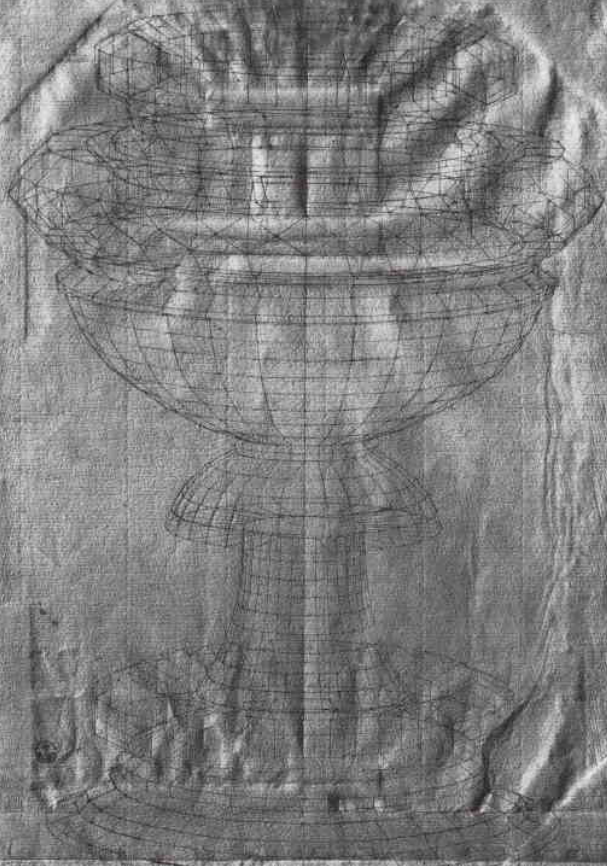

Paolo Uccello
Born: 1397, Pratovecchio, Republic of Florence Died: December 10, 1475, Florence
Born Paolo di Dono, Uccello was an Italian Renaissance painter and mathematician notable for his pioneering work on visual perspective. According to Vasari, he was obsessed by perspective and would stay up all night trying to grasp the exact vanishing point.

Artworks
Battle of San Romano
Commemorates Florence's victory over the Sienese in 1432. One of three panels (others in London and Paris). Demonstrates Uccello's fascination with perspective.

Funerary Monument of John Hawkwood My Study Self-researched
A painted equestrian monument commemorating the English condottiero John Hawkwood, who served Florence as a mercenary captain. The fresco is an important example of art commemorating a soldier-for-hire and is a seminal work in the development of perspective. Located on the left internal wall of the cathedral.

Story of Noah
Fresco depicting scenes from the Story of Noah in the Chiostro Verde (Green Cloister), demonstrating Uccello's fascination with perspective.